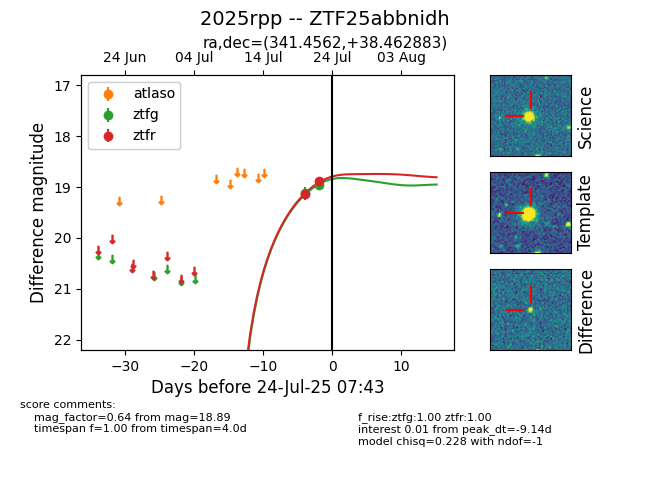

Target ZTF25abbnidh at 2025-07-24 07:43, see:
FINK: fink-portal.org/ZTF25abbnidh
Lasair: lasair-ztf.lsst.ac.uk/objects/ZTF25abbnidh
ALeRCE: alerce.online/object/ZTF25abbnidh
TNS: wis-tns.org/object/2025rpp
YSE: ziggy.ucolick.org/yse/transient_detail/2025rpp
alt names
ZTF25abbnidh (ztf,fink)
2025rpp (tns,yse)
coordinates:
equatorial (ra, dec) = (341.4562,+38.46288)
galactic (l, b) = (97.5083,-18.12966)
photometry
last ztfg=18.96, ztfr=18.89
2 ztfg, 2 ztfr detections
